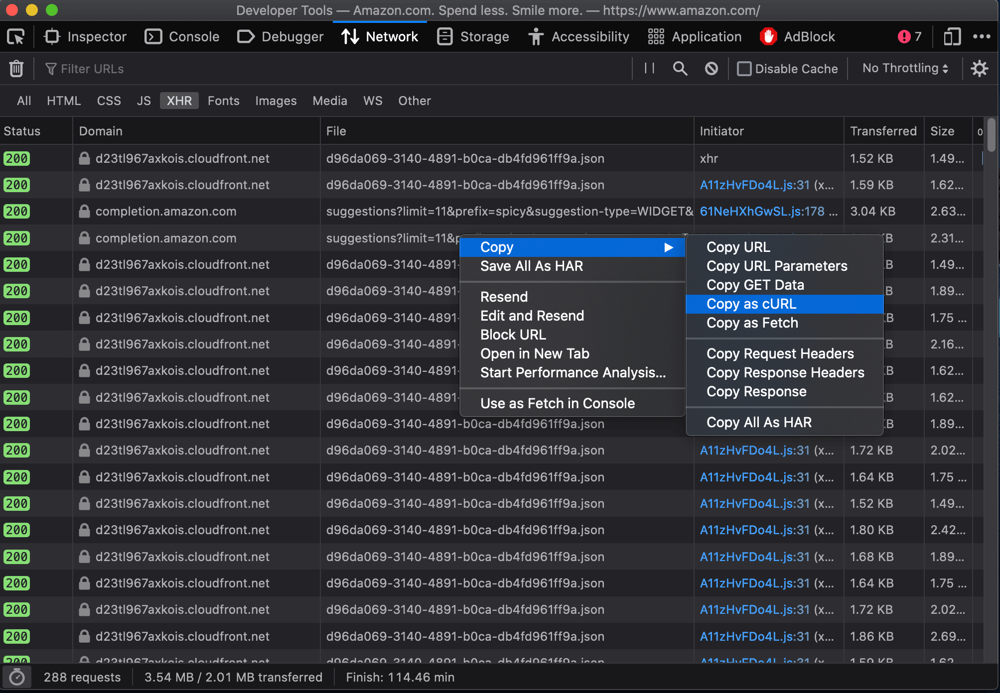

Finding Undocumented APIs
Most APIs are undocumented and hidden in plain sight.
Being able to find these APIs can provide a rich, reliable, and scalable method of building your own datasets.
Learn how to find them in the wild, and how they’ve been used in past investigations.
üëâClick here to jump to the tutorial.
Intro
What is an A-P-I?
If you have tried to get a driver’s license or a travel visa, you have experienced bureaucracy at its finest– a series of lines, forms, credential-showing, and waiting.
Application Program Interfaces, or APIs, are digitized bureaucracy. You make a request, and then wait in a queue to be served by a server. However, instead of leaving with a driver’s license or a custom plate, what you’re waiting for is well-formatted data. As for making mistakes… well, you’ll get an automated rejection and zero sympathy.
Most APIs are undocumented and hidden in plain sight. There is no set terminology for these APIs, so for simplicity’s sake we’ll refer to them as “undocumented APIs”.
Some investigations are only possible after finding and reverse-engineering undocumented APIs. Our first case study illustrates this in detail, where my reporting partner Aaron Sankin and I discovered undocumented APIs out of necessity while reporting on YouTube.
A key tool for investigations
YouTube is the largest video-hosting platform in the world, and plays a major role in the creator economy thanks to the YouTube Partner Program that shares ad revenue with eligible creators.
Advertising is central to YouTube, and major companies have boycotted the platform in the past in response to their ads appearing alongside extremist content. We wanted to better understand YouTube’s advertising system, especially how they treated hateful conspiracy theories, which at the time, seemed to thrive on the platform.
To start investigating this topic, we got acquainted with the Google Ads portal. Anyone can sign-up, and see all the tools that marketers can use to reach users across the Google adverse. YouTube has a special section of the ad portal, where marketers can target their ads based on user demographics and the content of videos.
We investigated a specific targeting tool that allows ad-buyers to use keyword searches to find videos and channels to place their ads on.
Read the investigation along with its accompanying methodology.
In an initial test, we found that searching for the racist “White genocide” conspiracy theory returned no videos, but by simply removing spaces, we were shown relevant results.
This anecdotal test suggested that Google was using a keyword blocklist that hid results for certain search terms, but not others. We performed further tests and found that searching for swears and strings of gibberish also surfaced no results.
We wanted to verify if Google was using a keyword blocklist, and test how consistent that blocklist was with YouTube’s “advertiser friendly” guidelines. Unfortunately, the portal did not make it possible to discern between a blocked keyword and one that may have been too obscure to return any results.
Our colleague Surya Mattu suggested using the web browser’s built-in developer tools to monitor network requests while we made searches in the portal. This proved to be a breakthrough that allowed us to isolate the API-endpoint being called during this process, reverse-engineer it to return results for any given keyword, and analyze the API’s response before its contents were displayed in the portal.
By looking closely at the API responses, we were able to identify clear structural differences based on Google’s verdict of the keyword. Blocked terms returned an empty JSON string {}, whereas obscure terms returned a JSON with labels but no results:
{“videos”: [], “channels": []}
With the categorization scheme established, we could confirm search terms were being blocked (read about this in detail here). Moreover, with the API at our service, we could test any set of keywords, so we tested well-known hate terms and phrases related to “racial justice and representation” that we asked independent advocacy groups to send us.
After testing the two keyword lists, we saw a pattern of Google blocking racial justice terms (like “Black power”), while showing advertisers results for well-known hate terms (like “White power”).
This was my first time finding and using an undocumented API for an investigation. Doing so revealed essential information that was not visible to everyday users, and it allowed us to perform systematic tests and bring receipts.
Before we dive deeper into how to find undocumented APIs, it’s important to note that some APIs are “official” and well-documented to the public. These APIs can also be used to great effect.
Documented APIs
Many businesses sell their services using APIs.
The benefit of documented APIs is self-explanatory, you know what you are going to get, and there are notes and examples to help developers use the tool as intended.
Some documented APIs are also free to use, making them a great tool for teaching and research. One such API that journalists frequent is the Census Data API, which we use to retrieve statistical survey data from across the United States. Unfortunately, free APIs can often disappear or have their access severely limited– as we’ve seen with Twitter (no longer free), YouTube (severely restricted), and Facebook (deprecated entirely).
How have Documented APIs been used?
Gender Shades was an audit of three commercially-available facial recognition APIs used to automate gender classification (from Microsoft, IBM, and Face++). The authors created a benchmark image dataset of faces hand-labeled by gender and skin tone, and tested each facial recognition model by sending the benchmark dataset through each respective model’s API (Buolamwini and Gebru 2018). The authors found that many models had high error rates for female and Black faces, with the worst performance on Black female faces.
Google’s Perspective API was developed to filter out toxic comments for publishers such as The New York Times. Importantly, Perspective used “training data” sourced from human-labeled Wikipedia edits. An academic study found racially biased classifications of Tweets. For example, the use of certain identifiers for minority groups would flag a comment as “toxic” (Sap et al. 2019). Because Google had released the API publicly, researchers could access and audit this technology directly through the API.
Now, let’s get back to APIs that are undocumented and hidden.
Undocumented APIs
These are the unsung heroes making sure websites run, often times executing essential functions behind the scenes. Many of these functions are so mundane, you probably don’t even realize that something is happening.
If you spend time on social media platforms, you’ll find that the good times keep rolling, and you’ll never reach the end of the page. That is because “infinite scroll” is powered by an API that is called upon as you approach the bottom of the page to load more fun things to eat up your day.
Sometimes engineers find these API endpoints and build open source software to access public data programmatically. See Instaloader (for Instagram) as an example.
Learning how to find and use these publicly available APIs can help you build evidence and test hypotheses that are otherwise unreachable due to lack of access.
Case Studies
How have undocumented APIs been used?
Journalists and researchers have used undocumented APIs to catalog Amazon Ring’s sprawling surveillance network (Calacci, Shen, and Pentland 2022; Cameron and Mehrota 2019), measure inequities in internet access using Facebook’s advertising ecosystem (Garcia et al. 2018), and parse complex government documents listing presidential appointees (Willis 2013).
Using undocumented APIs has three key strengths:
- Richness: APIs often contain information that is not visible on web pages.
- Reliability: APIs execute essential functions, so they don’t change often. This can make for a reliable data source over time.
- Scalability: You can collect more information in less time using this method compared to headless browsers, such as Selenium, Puppeteer, and Playwright (Not throwing shade– these tools have their purpose).
Next we will cover three case studies, each of which is intended to highlight one of these benefits.
Case study on richness: Google’s blocklist for YouTube advertisers
I’m not going to rehash this case study, since we led with it in the introduction, but…
Using undocumented APIs can reveal rich metadata. This includes hidden fields that are not displayed to everyday users of a website, as well as subtle changes to the structural in how data is returned.
Using this metadata produces receipts you can follow by deciphering the meaning of these hidden fields, finding traces left by missing data, and identifying patterns that are otherwise hidden from the surface (front-end) world.
Certainly this was the case with the YouTube investigation, and something that we’ll brush on again in the hands-on tutorial at the end of this section.
Case study on reliability: Amazon branded products
If you have ever scraped HTML from a website, you’ve likely found yourself with a broken scraper.
This occurs when class names, accessibility labels, text, or something else has changed and confused your scraper. In this sense, HTML scraping can be fragile and fickle, especially if your collecting data over a prolonged period of time.
A stark example is Facebook’s timeline, where you’ll find elements of the page are arbitrarily named, oddly-nested, and ever-changing.
Using undocumented APIs can often get you the same information with a higher success-rate. This is because these APIs interact with the same backend (fetching information before being rendered, named, and nestled neatly into a webpage), and are often essential to the operation of the website.
In the investigation “Amazon’s Advantage”, Adrianne Jeffries and I found a reliable method of identifying Amazon brands and exclusive products. At the time, these products were not clearly labeled, most Americans we surveyed were unable to identify Amazon’s top brands, and no source of truth existed.
We developed a approach to identify these products as Amazon private label using a filter found in the user interface of Amazon’s website. The “Our brands” filter did a lot of heavy lifting in our investigation, and we found that it was powered by a undocumented API that listed all the Amazon branded products for a given search.
This method was key to our investigation, which required persistent data collection over a period of several months. To our surprise, the API continued to work after we went to Amazon for comments on our detailed methodology, after we published our investigation, and even after Amazon executives were accused of perjury by members of the U.S. Congress.
Usually the party gets shut down once you call the parents, but in this case it didn’t.
Because the API continued to work, we used it in a browser extension (Amazon Brand Detector) that we (including Ritu Ghiya and Jeff Crouse) built to highlight Amazon brands for shoppers around the globe. About half a year later, Amazon added an orange disclaimer of “Amazon brand” to their branded products, but the API and extension still work at the time of writing, more than a year later.
This case study emphasizes the reliability of using undocumented APIs, not only for collecting datasets, but for persistent accountability efforts.
Case study on scalability: collecting Internet Plans
In the investigation, “Still Loading” my reporting partner Aaron Sankin and I collected and analyzed over 1 million internet service plans across major cities in the United States.
We learned a technique from a trio of researchers from Princeton, that used the lookup tools found on the internet service providers’ websites to retrieve internet plans for a specific address (Major, Teixeira, and Mayer 2020).
However, doing this using a browser (as a real person would) is incredibly slow. Even with 10 automated browsers (see below) with unique IP addresses, it would have taken months to collect a representative sample of a single major American city.
Browser automation is bulky. Not only do you need to load every asset of a web page, there is also the compute resources necessary to spin up a browser. When you can get away without having to mock user interactions, or use rendered page elements, finding the underlying API(s) can be quicker and more eloquent.
Initially, the workflow for getting an internet plan seemed too complex to pull off using an API– there was user authentication that set a cookie, choosing an address from a list of suggestions, and adding an apartment number when prompted.
However, we were able to keep track of cookies using a session (read about this advanced topic here), and speed things up by bundling the sequence of successive API calls into a function.
Not only was this function easier to write, but it was able to be written and executed asynchronously. Meaning we could request internet plans from many addresses at the same time.
This allowed us to collect AT&T internet plans for a representative sample of 21 cities in two days, rather than two years.
Timely data collection is key. Solving this issue allowed us to be ambitious in the scope of our investigation, which ultimately found that Internet pricing disparities were common for lower-income, least-White, and historically redlined areas.
When it comes to web scraping, undocumented APIs offer unmatched scalability to collect massive amounts of data. This is especially true when you orchestrate them with asynchronous and multi-threaded programming (another topic we plan to cover in a future section).
Although the process of finding undocumented APIs is not too complicated (as you’ll see in the tutorial), the chances of finding one that is helpful for your investigation or research are still quite low. Don’t be deterred, that just makes finding a useful one more special.
Tutorial
How to find and use undocumented APIs
In this exercise, you’ll learn to sniff out undocumented APIs using the web browser’s developer tools (shortened to dev tools), figure out how they work, test different inputs, and analyze API responses.
You can do most of this tutorial with zero coding, but it’ll hold you back from using APIs to their fullest.
Note that if you’re in a workshop setting: hitting the example API at the same time will get us all blocked from the website!
1. First open the developer console.
See how on Chrome or Firefox here.
In this tutorial, we’ll see how Amazon.com autocomplete search suggestions work.
One way to get to the dev tools it to right-click and “Inspect” an element on the page.
This will open the dev tools under the “Elements” tab, which is used to explore the source code of a page.
Page source code is useful because it reveals clues that are otherwise unseen by regular users. Often times, clues are in accessibility features known as ARIA elements.
However, this tutorial is not about source code… it’s about API requests that populate what we see on the page, and the hidden fields that we don’t see.
Let’s try this!
With dev tools open, go to Amazon.com, select the search bar on the website, and start typing a query (such as “spicy”).
2. Click the “Network” tab.
This section of the dev tools is used to monitor network requests.
Background
Everything on a page is retrieved from some outside source, likely a server. This includes things like images embedded on the page, JavaScript code running in the background, and all the bits of “content” that populate the page before us.
Using the Network tab, we can find out how this information is requested from a server, and intercept the response before it is rendered on the page.
These responses are information-rich, and contain fields that don’t end up in the source code or in the user interface that most people encounter when they visit a site.
Further, we can reverse-engineer how this request is made, and use it to collect structured data at scale. This is the power of finding undocumented APIs.
Back to the console…
The Network tab can look pretty hectic at first. It has many uses, and a lot of information. We’ll cover some of the basics.
3. Filter requests by fetch/XHR
This will reveal only API calls made to servers. This includes internal servers that are hosted by the website we’re inspecting, as well as external servers. The latter often includes third-party trackers used in adtech, and verification services to authenticate user behavior.
You might see quite a few network requests that were loaded onto the page. Look at “Domain” and “File” to narrow down where requests were sent, and whether the names are telling of the purpose of the request.
In this example, notice that a request was sent to the “Domain” completion.amazon.com, using an API endpoint (in the “File” column) named suggestions. This is likely the API being called to populate autocompleted search suggestions on the Amazon marketplace. Reading “File” names can help determine each API’s function.
When clicking the network request, you’ll see “Headers”. Those are the HTTP headers that were sent along with the network request. This is not useful for us just yet, instead we want to see what data gets transferred as a result of the API call.
To do this, we’ll look at the request’s “Response” attributes.
4. Analyze the response
This might seem intimidating at first, but let me key you in on some tips. Responses are almost always JSON-formatted. JSON is made up of lists and key-value pairs. This means the information is stored like a dictionary, with words and their corresponding definitions.
Looking at the JSON response, it looks like Amazon’s completion.amazon.com/suggestions API returns a list of “suggestions”. Each item in the list of suggestions has a “value”, in the example above that “value” is spicy ramen.
Check your work: confirm this interpretation is correct by cross-referencing the API response with what a user would see on the website.
Another check you can perform CTRL+F the JSON response for a unique string. This could be a string of text on the page (or something else) that serves as a unique tracer. Verifying its presence will help pinpoint the right API call.
Getting these steps down, is your one way ticket to spicy town, and you don’t need to code at all.
However, some rudimentary coding can help you figure out how to use the API for vast inputs to collect your own dataset.
5. Copy as cURL
If you find an HTTP request that returns a response with useful information you can start to reverse-engineer it. To do that, we can isolate it by right-clicking the HTTP request and selecting “copy as cURL”. (cURL stands for client URL, and is a tool used to transfer data across networks.)

6. Curl to requests
We can use a site like curlconverter.com to convert the cURL we copied into a reusable API call. In this example, we use the default conversion to a Python requests script. You can do the same for any language and framework.
Here is what the converted cURL looks like after being converted to a Python request:
import requests
cookies = {
'aws-ubid-main': '836-8365128-6734270',
'session-id-time': '2082787201l',
'ubid-main': '135-7086948-2591317',
'aws-priv': 'eyJ2IjoxLCJldSI6MCwic3QiOjB9',
'aws-target-static-id': '1593060129944-225088',
'lc-main': 'en_US',
'x-main': 'Oz3Tb5n2p0ic7OhF3cU5dc9B4ZR2gFjhKEsP4zikHHD3Gk2O7NpSmuShBxLFrhpZ',
'at-main': 'Atza|IwEBILB5ARQ_IgTCiBLam_XE2pyT76jXTbAXHOm2AJomLPmDgoJUJIIlUmyFeh_gChLHCycKjNlys-5CqqMabKieAzqSf607ChJsNevw-V06e7VKgcWjvoMaZRWlGiZ-c5wSJ-e4QzIWzAxTS1EI6sRUaRZRv-a0ZpOJQ-sHHB99006ytcrHhubdrXYPJRqEP5Q-_30JtESMpAkASoOs4vETSFp5BDBJfSWWETeotpIVXwA4NoC8E59bZb_5wHTW9cRBSWYGi1XL7CRl2xGbJaO2Gv3unuhGMB1tiq9iwxodSPBBTw',
'sess-at-main': '"PUq9PW1TbO9CTYhGMo7l1Dz+wedh40Ki8Z9rPC+1TSI="',
'sst-main': 'Sst1|PQHsbeSFCMSY0X0_WgvTo5NUCaZkG2J9RPqWWy0fCpyWopJXgu6_drU_LstOdJB2cDmaVCXwkNpsF5yNPrBDj3Wtx-TC-AaYZn6WUdp8vNRPb6iYqxPAjRDnfK3pCnHqt19I0GoG7Bd1wnOxkAvnH0992IUq14kH6Ojm0J8noVPwMez0lltD-jxBwtDQ_EZYUkZG741RDVEojfziawJY9iKc-cLCnKmhi-ca1PPJnsimPV4lXRtMAGFbf9nMkKq4CbpkaRMdVtlPr20vF9eqg_V_-LY_V7S44WlO-_t_bFBnK8Q',
'i18n-prefs': 'USD',
'session-token': 'ptze73uznXExrMCSV9AklvNOKa1ND9F0rlQH2ioSM26Vr6hSheH8O4v4P8Lg3zuv7oDM+HZ+8f2TlyoPXUmPShprMXdvEpAQieXUw7+83PZOJvkkg1jwP0NiG0ZqksIYOr3Zuwt3omMcfCKRReWKxl5rGaDEM6AISpwI5aMDDCnA7fWbVO/QQYNxUZMifc599EZ5Fg3uGjCAhBlb6I7UO8ewRbXJ1bo9',
'session-id': '139-9925917-2023535',
'aws-userInfo-signed': 'eyJ0eXAiOiJKV1MiLCJrZXlSZWdpb24iOiJ1cy1lYXN0LTEiLCJhbGciOiJFUzM4NCIsImtpZCI6ImFhNDFkZjRjLTMxMzgtNGVkOC04YmU5LWYyMzUzYzNkOTEzYiJ9..LWFZOJMDcYdu6od6Nk8TmhAFMGA9O98O4tIOsVlR7w5vAS_JgVixL8j75u6jTgjfWkdddhKqa5kgsXDmGNbjhzLIsD48ch1BUodlzxqeQfn0r8onIwLbUIHEnk6X-AJE',
'skin': 'noskin',
}
headers = {
'User-Agent': 'Mozilla/5.0 (Macintosh; Intel Mac OS X 10.15; rv:100.0) Gecko/20100101 Firefox/100.0',
'Accept': 'application/json, text/javascript, */*; q=0.01',
'Accept-Language': 'en-US,en;q=0.5',
# 'Accept-Encoding': 'gzip, deflate, br',
'Origin': 'https://www.amazon.com',
'Connection': 'keep-alive',
'Referer': 'https://www.amazon.com/',
'Sec-Fetch-Dest': 'empty',
'Sec-Fetch-Mode': 'cors',
'Sec-Fetch-Site': 'same-site',
}
params = {
'limit': '11',
'prefix': 'spicy',
'suggestion-type': [
'WIDGET',
'KEYWORD',
],
'page-type': 'Gateway',
'alias': 'aps',
'site-variant': 'desktop',
'version': '3',
'event': 'onKeyPress',
'wc': '',
'lop': 'en_US',
'last-prefix': '\0',
'avg-ks-time': '2486',
'fb': '1',
'session-id': '139-9925917-2023535',
'request-id': 'SVMTJXRDBQ9T8M7BRGNJ',
'mid': 'ATVPDKIKX0DER',
'plain-mid': '1',
'client-info': 'amazon-search-ui',
}
response = requests.get('https://completion.amazon.com/api/2017/suggestions',
params=params, cookies=cookies, headers=headers)You can run this Python code, as-is, and it should work.
Just a reminder that you can run this code interactively on Google Colab by copying this tutorial (it’s written as a Jupyter Notebook), or running a “new notebook” and pasting the code in.
Press the little play button on the left to run the code. You should see something that looks similar to what you saw in the inspector.
# to see the response, run this cell:
response.json()7. Strip it down
You might be overwhelmed with the parameters that go into this API request. Like the response output, the inputs are formatted like a JSON, too. Start removing these parameters one-by-one.
Keep parameters for authentication, and also the input parameters that you can change for your own purposes. Notice that the example query of “spicy” stored in the prefix parameter.
Parameter values can expire, so periodically test the request and each parameter to assure you only keep the shelf-stable parts.
headers = {
'User-Agent': 'Mozilla/5.0 (Macintosh; Intel Mac OS X 10.15; rv:100.0) Gecko/20100101 Firefox/100.0',
'Accept': 'application/json, text/javascript, */*; q=0.01',
'Accept-Language': 'en-US,en;q=0.5',
}
params = {
'prefix': 'spicy',
'suggestion-type': [
'WIDGET',
'KEYWORD',
],
'alias': 'aps',
'plain-mid': '1',
}
response = requests.get('https://completion.amazon.com/api/2017/suggestions', params=params, headers=headers)8. Recycle and reuse
With the stripped down request, try to submit a few— let’s say 10 or 20, requests with new parameters set by you.
For convenience, we can write the stripped down API call as a function that takes any keyword as input.
import pandas as pd
import time
def search_suggestions(keyword):
"""
Get autocompleted search suggestions for a `keyword` search on Amazon.com.
"""
headers = {
'User-Agent': 'Mozilla/5.0 (Macintosh; Intel Mac OS X 10.15; rv:100.0) Gecko/20100101 Firefox/100.0',
'Accept': 'application/json, text/javascript, */*; q=0.01',
'Accept-Language': 'en-US,en;q=0.5',
}
params = {
'prefix': keyword,
'suggestion-type': [
'WIDGET',
'KEYWORD',
],
'alias': 'aps',
'plain-mid': '1',
}
response = requests.get('https://completion.amazon.com/api/2017/suggestions',
params=params, headers=headers)
return response.json()In this step the code gets refactored to make it repeatable and reusable, but it’s a bit of a jump if you’re not a coder. If that’s you, still try to read the code – you should be able to get a rough idea of what does what, and how it’s similar to the code you had in the last step.
Here we can set new input parameters in keyword, and make the an API call using each keyword. Try changing some of the code (eg. the keywords) and rerunning it to check your understanding.
# Here are our inputs (what searches we'll get autocompleted)
keywords = [
'a', 'b', 'cookie', 'sock', 'zelda', '12'
]
# Here we'll go through each input, get the suggestions, and then add the `suggestions` to a list.
data = []
for keyword in keywords:
suggestions = search_suggestions(keyword)
suggestions['search_word'] = keyword # keep track of the seed keyword
time.sleep(1) # best practice to put some time between API calls.
data.extend(suggestions['suggestions'])We saved the API responses in a list called data, and put them into a Pandas DataFrame to analyze.
df = pd.DataFrame(data)
# show 5 random auto suggestions
df.sample(5, random_state=303)| suggType | type | value | refTag | candidateSources | strategyId | prior | ghost | help | queryUnderstandingFeatures | |
|---|---|---|---|---|---|---|---|---|---|---|
| 4 | KeywordSuggestion | KEYWORD | asmanex twisthaler 30 inhaler | nb_sb_ss_i_5_1 | local | organic | 0.0 | False | False | [{'source': 'QU_TOOL', 'annotations': []}] |
| 13 | KeywordSuggestion | KEYWORD | bathroom organizer | nb_sb_ss_i_4_1 | local | organic | 0.0 | False | False | [{'source': 'QU_TOOL', 'annotations': []}] |
| 19 | KeywordSuggestion | KEYWORD | baby wipes | nb_sb_ss_i_10_1 | local | organic | 0.0 | False | False | [{'source': 'QU_TOOL', 'annotations': []}] |
| 12 | KeywordSuggestion | KEYWORD | baby registry search | nb_sb_ss_i_3_1 | local | organic | 0.0 | False | False | [{'source': 'QU_TOOL', 'annotations': []}] |
| 16 | KeywordSuggestion | KEYWORD | b013xkha4m b08xzrxczm b07xxphqzk b09rwjblc7 | nb_sb_ss_i_7_1 | local | organic | 0.0 | False | False | [{'source': 'QU_TOOL', 'annotations': []}] |
If you look at the columns, you might be flooded with more questions:
- Some terms may be
blackListed, what does that mean and what words, if any, areblackListed = True? - Are some searches paid for, and not
organic? - What is
ghost?
This metadata is only visible from the API, and can lead to new story ideas and directions to pursue.
Unfortunately, because this API is undocumented, asking these questions and figuring out what everything represents is difficult. Use your curiosity and look at many examples. The feature of the API is being able to make many queries at scale, which should help answer these questions. Reporting this out with sources is also essential in this process.
Do it yourself
Find an API in the wild, isolate it, strip it down, reverse-engineer it and analyze some of its results.
If a website has a search bar or a text box that queries a server or database, there’s a good chance that you can find an API.
Revisit the steps we outlined above, and apply them to a new website. If you aren’t a coder, try to get steps 1-6 (I believe in you!).
If you are a coder, try some of the advanced usage below.
For advanced usage…
- Handle errors for bad requests, rate limiting, and other issues that could arise.
- Restructure the API response to better analyze (called “parsing” the data).
- you can use
sessioninstead of pure requests. This is helpful if cookies and authentication are involved. Read more about that here. - you can make a request asynchronous to speed up data collection (without overloading the site’s servers, of course).
- Implement steps 6-onwards in another programming language.
Predetermined prompts
Don’t know where to look? Here are some ideas:
- YouTube recommendations.
- Blacklight’s API to find third-party trackers on a website.
- Amtrak’s train statuses.
Homework assignment
Practice: Keep trying to find APIs in the wild. Think about the websites you frequent, topics that interest you, or stories you’re currently working on. You won’t always find an API, and that’s OK.
Scoping: Determine how the API could be used to produce data to answer a reporting question or hypothesis. What will be your sample for a quick test, i.e. how many data points are enough to know if you have something?
Reporting: Determine the meaning and significance of hidden fields that are returned.
Ultimately APIs are a tool, and data is useless without a purpose. Hopefully this worksheet helps you in your time of need.
Citation
To cite this chapter, please use the following BibTex entry:
@incollection{inspect2023browser,
author = {Yin, Leon},
title = {Finding Undocumented APIs},
booktitle = {Inspect Element: A practitioner's guide to auditing algorithms and hypothesis-driven investigations},
year = {2023},
editor = {Yin, Leon and Sapiezynski, Piotr and Raji, Inioluwa Deborah},
note = {\url{https://inspectelement.org}}
}
Acknowledgements
Thank you Max Harlow for suggestions in making the tutorial easier to understand, and a well-compressed thank you to Simon Fondrie-Teitler for helping optimize this page.